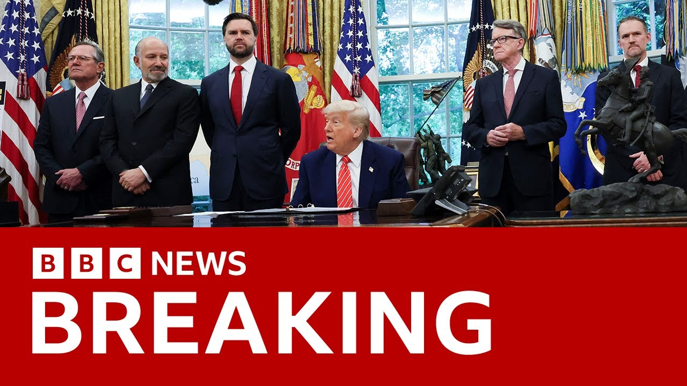

来B站一起耍【Global每日英语简报】
【特朗普在椭圆形办公室新闻发布会上宣布美英关税协议 | BBC新闻】
Summary: The UK Prime Minister Saki Starmmer and US President Donald Trump announced a historic trade deal, emphasizing reciprocity, market access, and economic security, while celebrating the 80th anniversary of their alliance.
摘要： 英国首相萨基·斯塔默和美国总统唐纳德·特朗普宣布了一项历史性贸易协议，强调互惠、市场准入和经济安全，同时庆祝两国结盟80周年。

⏱️ Estimated Reading Time: 15 min
We are going to hear from the UK Prime Minister Saki Starmmer to give the UK's perspective of what has been agreed to.
我们将听取英国首相萨基·斯塔默的发言，了解英国对协议的看法。
We were hearing a little earlier or it's been reported by the Reuters news agency that Donald Trump and Karma had what is described as a warm conversation on Wednesday night and will again speak in the morning.
早些时候，路透社报道称，唐纳德·特朗普和卡玛周三晚上进行了热情交谈，并将在早上再次通话。
I'm being told just in my ear that we can actually hear a little bit of that taped conversation between Sakir Stalmer and Donald Trump from last night.
我刚刚得知，我们可以听到昨晚萨基尔·斯塔默和唐纳德·特朗普的部分录音对话。
So, I'm going to just uh put that on the screen for you to hear.
所以，我会把这段录音放出来给大家听。
Ally and we're so happy that that's the way it worked out.
盟友关系让我们非常高兴事情这样发展。
I want to thank Prime Minister Starmer and his very talented team for their outstanding work and partnership.
我要感谢斯塔默首相及其才华横溢的团队出色的工作和合作。
Today's agreement with the UK is the first in a series of agreements on trade that my administration has been negotiating over the past four weeks.
今天与英国达成的协议是过去四周我们政府谈判的一系列贸易协议中的第一项。
With this deal, the UK joins the United States in affirming that reciprocity and fairness is an essential and vital principle of international trade.
通过这项协议，英国与美国共同确认互惠和公平是国际贸易的基本原则。
The deal includes billions of dollars of increased market access for American exports, especially in agriculture, dramatically increasing access.
该协议为美国出口产品，尤其是农产品，提供了数十亿美元的市场准入，大幅增加了机会。
Well, I'm going to come away from that recorded conversation because those live pictures that we've been waiting for in the Oval Office.
现在我要结束录音对话，因为我们等待的椭圆形办公室现场画面来了。
There he is, the US president.
那就是美国总统。
Let's put the microphones up.
让我们把麦克风打开。
In addition, the UK will reduce or eliminate numerous non-tariff barriers that unfairly discriminated against American products.
此外，英国将减少或取消许多不公平歧视美国产品的非关税壁垒。
But this is now turning out I think really to be a great deal for both countries because it'll be really great for the UK also.
但事实证明，这对两国都是非常有利的协议，对英国也非常有益。
So they're opening up uh the country.
所以他们正在开放国家。
Their country is a little closed and uh we appreciate that.
他们的国家之前有些封闭，我们对此表示赞赏。
They'll also be fasttracking American goods through their customs process.
他们还将加快美国商品的海关流程。
So our exports go to uh a very very quick uh form of approval and there won't be any red tape.
因此，我们的出口将获得非常快速的批准，没有任何繁文缛节。
Things are going to move very quickly both ways.
双方的合作将迅速推进。
The final details are being written up in the coming weeks.
最终细节将在未来几周内敲定。
We'll have it all very conclusive, but the actual deal is a very conclusive one.
我们会有一个非常明确的协议，实际协议已经非常明确。
We think just about everything's been approved.
我们认为几乎所有内容都已获批。
Uh so good for both countries.
这对两国都非常有利。
And we'll also receive new market access for American chemicals, machinery, and many other industrial products that weren't allowed.
我们还将获得美国化学品、机械和其他许多之前不被允许的工业产品的新市场准入。
Uh and they'll end up getting products that they'll be able to price.
他们将能够定价这些产品。
And if they like them better and we make great products, they'll be buying those products.
如果他们更喜欢这些产品，而我们的产品又很棒，他们就会购买。
but they were not uh available in the UK.
但这些产品之前在英国无法获得。
Furthermore, in a historic step, the deal includes plans that will bring the United Kingdom into the economic security alignment with the United States.
此外，作为历史性一步，该协议包括将英国纳入美国经济安全联盟的计划。
That's the first of its kind.
这是前所未有的。
So, we have a big economic security blanket and that's very important and we feel very very comfortable with that because it's been a great ally, truly one of our great allies.
因此，我们有了一个巨大的经济安全保护伞，这非常重要，我们感到非常安心，因为英国一直是我们伟大的盟友之一。
I mean, a lot of people say our greatest ally.
很多人说英国是我们最伟大的盟友。
I don't want to insult people by saying that, but I can say it's certainly one of our greatest and right at the top.
我不想因此冒犯别人，但可以说它确实是我们最伟大的盟友之一，名列前茅。
And they're the first one we're talking about.
而英国是我们第一个讨论的国家。
And by the way, we have many meetings planned today and tomorrow.
顺便说一下，我们今天和明天安排了许多会议。
And uh every country wants to be making deals.
每个国家都想达成协议。
And we have a meeting, as you know, Scott, will be going over to Switzerland on Saturday, and that'll be very, very interesting.
斯科特，你知道我们周六还要去瑞士开会，那将非常有趣。
We'll find out.
我们会知道的。
But I think they want to make a deal very badly, too.
但我觉得他们也迫切希望达成协议。
Both countries have agreed that the economic security is national security and we'll be working together as allies to ensure that we have a strong industrial base, appropriate export controls and protections for key technologies and industries like steel.
两国一致认为经济安全就是国家安全，我们将作为盟友共同努力，确保拥有强大的工业基础、适当的出口管制以及对钢铁等关键技术和产业的保护。
Steel is a big factor.
钢铁是一个重要因素。
Both countries will become stronger with steel and things necessary for military.
两国将通过钢铁和军事必需品变得更强大。
you know, we used to build ships and other things uh literally at a level that nobody's ever seen.
我们过去建造船只和其他东西的水平无人能及。
And uh we haven't we've eased up and I would say that the UK certainly eased up, but now we're going to be uneasing both and we work together.
我们放松了，英国当然也放松了，但现在我们将重新加强合作。
Once again, I want to thank Prime Minister Storm.
再次感谢斯塔默首相。
He's been terrific for his partnership in this matter.
他在这件事上的合作非常出色。
The special relationship and external bond, it's really an external and an internal bond between our two countries will soon be stronger than ever before.
这种特殊关系和外部纽带，实际上是我们两国之间内外部的纽带，将比以往任何时候都更牢固。
We really do.
确实如此。
We have a great relationship.
我们有着伟大的关系。
Uh I want to just say that the representatives of UK have been so professional and uh it's been an honor doing business with all of them and in particular the prime minister and I'd like to introduce him now to say a few words.
我想说英国代表非常专业，与他们合作是我的荣幸，尤其是首相，现在我想请他发言。
Mr. Prime Minister, please take it away.
首相先生，请开始吧。
Uh thank you Mr. President Donald and um this is a really fantastic uh historic day in which we can announce um this deal between our two great countries and I think it's a real tribute um to um the history that we have of working so closely um together.
谢谢唐纳德总统，今天是一个历史性的日子，我们可以宣布两国之间的这项协议，我认为这是对我们紧密合作历史的致敬。
Can I pay tribute, Donald, to your negotiating team as well, particularly Howard and Jameson who've done an incredible job, a very professional job um and my team as well.
唐纳德，我也要感谢你的谈判团队，尤其是霍华德和詹姆森，他们做得非常出色，非常专业，我的团队也是。
Two negotiating teams have worked at Pace now um for a number of weeks to bring in this uh deal uh today.
两个谈判团队在过去几周加紧工作，才促成了今天的协议。
Really important deal.
这是一项非常重要的协议。
This is going to boost trade uh between and across our countries.
这将促进两国之间的贸易。
It's going to not only protect jobs but create jobs.
它不仅会保护就业，还会创造就业。
um opening market access.
开放市场准入。
And as you say, Donald, the timing couldn't be more apt because not only was it 80 years ago today, um that um victory uh came for Europe after and at the end of the Second World War.
正如你所说，唐纳德，时机再合适不过了，因为80年前的今天，欧洲在二战结束时取得了胜利。
But of course on that day, the UK and the US stood together as the closest of allies.
当然，在那一天，英国和美国作为最亲密的盟友站在一起。
And Donald, I think um even down to the hour because um you may or may not know that it was about this time of day, exactly 80 years ago uh that Winston Churchill announced um victory in Europe.
唐纳德，我认为甚至精确到小时，因为80年前的今天差不多这个时间，温斯顿·丘吉尔宣布了欧洲的胜利。
Um and that led to great celebrations um across Europe, across America, but particularly in the United Kingdom.
这引发了欧洲、美国，尤其是英国的盛大庆祝。
um literally people going out into the street uh putting bunting up um going up to the palace and um so to be able to announce this great deal um on the same day uh 80 years this great deal um on the same day uh 80 years forward um almost at the same hour um and as we were 80 years ago with the UK and the US standing side by side I think is incredibly important and makes this truly historic.
人们走上街头悬挂彩旗，前往宫殿，能够在80年后的同一天、几乎同一时间宣布这项伟大协议，就像80年前英美并肩而立一样，我认为非常重要，使这成为真正的历史性时刻。
Um that close relationship has endured over those 80 years.
这种紧密关系在这80年中一直延续。
Um as you know Donald when it comes to defense and security and intelligence sharing of course there are no two countries that are closer than our two countries and now we take this into new and important territory by adding trade and the economy to the closeness of our relationship.
如你所知，唐纳德，在国防、安全和情报共享方面，没有哪两个国家比我们更紧密，现在我们通过将贸易和经济纳入我们的紧密关系，将其推向新的重要领域。
It is built as you say on those notions of fairness um and reciprocal arrangements.
正如你所说，这是建立在公平和互惠安排的基础上的。
We've always had a fair balanced arrangement between our countries.
我们两国之间一直有公平平衡的安排。
This builds on that.
这在此基础上更进一步。
Hugely important um for sectors like car manufacturing um and for steel and aluminium and so many others.
对汽车制造、钢铁、铝等许多行业非常重要。
Um and yes um we can finish hiring out some of the details but there's a plat fantastic platform here including of course on the tech side uh where I think I'm right in saying we're the only two western countries with trillion dollar sectors when it comes to tech.
是的，我们可以完成一些细节，但这里有一个绝佳的平台，包括科技领域，我认为我们是仅有的两个拥有万亿美元科技产业的西方国家。
Um and in the end it comes down to um as you say Donald uh economic security is national security on national security we've been absolutely the closest of allies for so many years keeping the peace through that close um alliance that friendship um and now we add to that this uh deal on trade and the economy and I want to thank you uh for your leadership on that Donald um and for um the way in which your team have negotiated this and I'm so pleased that we've got this deal.
最终，如你所说，唐纳德，经济安全就是国家安全，多年来我们一直是最亲密的盟友，通过这种紧密的联盟和友谊维护和平，现在我们又增加了这项贸易和经济协议，我要感谢你的领导，唐纳德，以及你的团队谈判的方式，我非常高兴我们达成了这项协议。
Um we've finalized it.
我们已经敲定了。
Um and um we've built an incredible platform um for the future.
我们为未来建立了一个不可思议的平台。
So thank you so much.
非常感谢。
Um Donald, I'm now going to go and do a press um conference.
唐纳德，我现在要去开新闻发布会。
I think you have your press in um with you.
我想你的记者也在场。
Uh but on the details, I think if you've got Howard etc.
关于细节，我想如果你有霍华德等人。
Um we can um uh deal with that through um one of my team.
我们可以通过我的团队来处理。
That's great.
太好了。
Well, Mr. Prime Minister, thank you very much.
首相先生，非常感谢。
You know, but the US and UK have been working for years to try and make a deal and it never quite got there.
你知道，美国和英国多年来一直试图达成协议，但从未成功。
Yeah, it did with this prime minister.
是的，直到这位首相才成功。
So, I want to just congratulate you.
所以，我要祝贺你。
Well, with this president, this prime minister, we've managed to achieve what many people have tried to achieve for many years.
在这位总统和这位首相的领导下，我们实现了许多人多年来试图实现的目标。
Um, and I'm really pleased and and it feels uh completely historic and and on a special 80-year anniversary as well.
我真的很高兴，这感觉完全是历史性的，而且是在80周年的特殊纪念日。
So Donald, thank you so much.
所以，唐纳德，非常感谢。
Um it's really good to have got this um deal over the line.
能达成这项协议真是太好了。
Um tribute to both teams, tribute to our countries and tribute to your leadership.
向双方团队致敬，向我们的国家致敬，向你的领导力致敬。
Thank you.
谢谢。
Well, it really is a great thing and uh you go do your press conference and I'll see you soon, maybe speak to you later.
这确实是一件伟大的事情，你去开新闻发布会吧，我们很快会再见，也许晚点再聊。
Uh but thank you very much and an incredible thing.
非常感谢，这是一件了不起的事情。
And I can't tell you that for so many years even as I sat everybody talked and talked and talked about a deal with it just seemed like a natural deal but uh it was not done but now it was done with us so I feel very proud to have been a part of it Kier thank you very much thanks Donald we'll speak again soon very good bye
多年来，即使我坐在那里，大家一直在谈论这项协议，它似乎是一个理所当然的协议，但直到现在才由我们完成，所以我很自豪能参与其中，基尔，非常感谢，唐纳德，我们很快会再聊，再见。